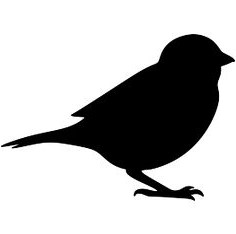

Here you can see three different projects, developed by the members of Jazz By Heart, in collaboration with other musicians and internally. All the projects have their own style while still keeping in touch with the core of what Jazz By Heart is.
